Based loop homotopy becomes \(\pi_1\); model-space calculations become algebraic obstructions.
Source span: printed pp. 87-118; PDF pp. 98-128. Notebook: chapter-05-the-fundamental-group.
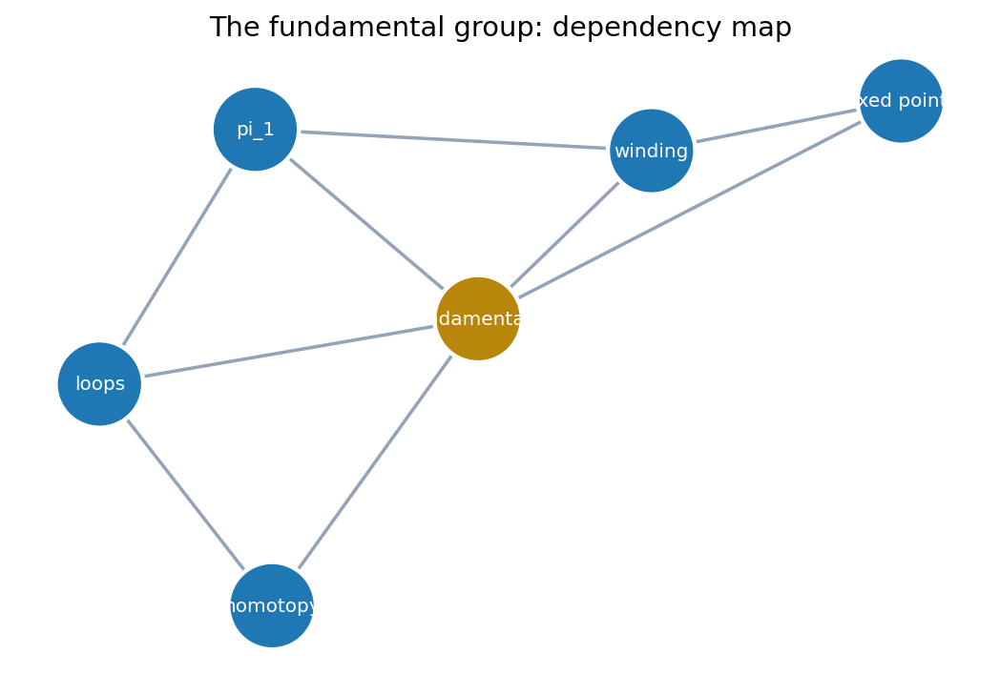
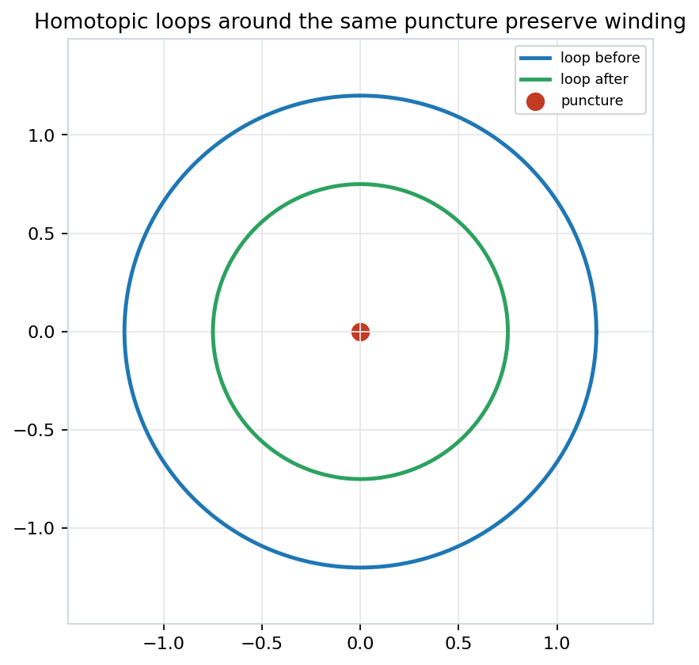
The lift is the compact way to remember winding while ignoring visually distracting loop shape.
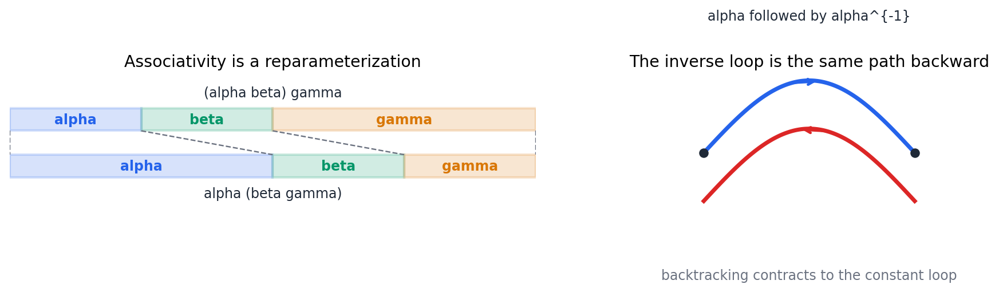
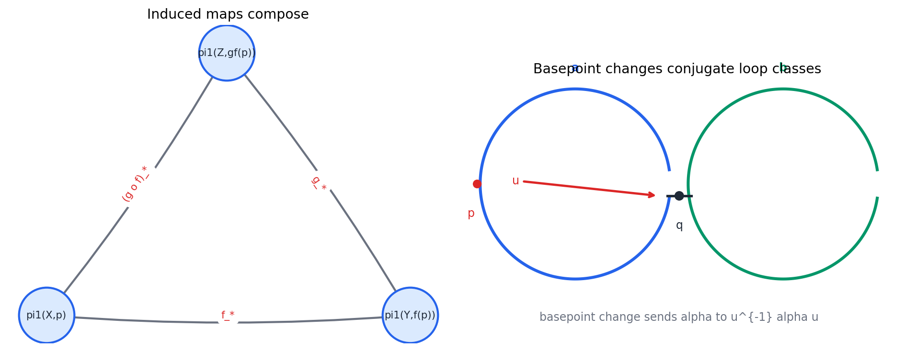
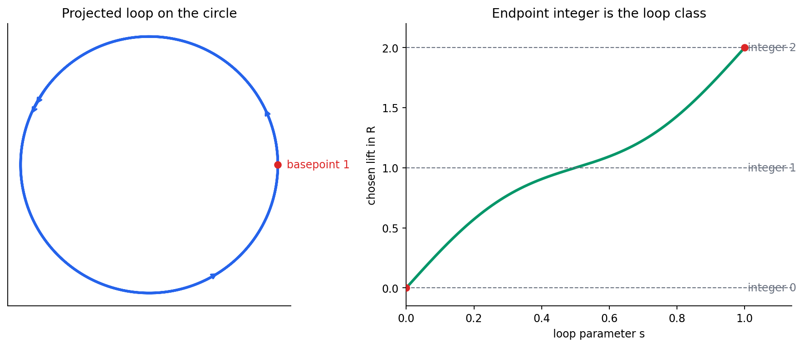
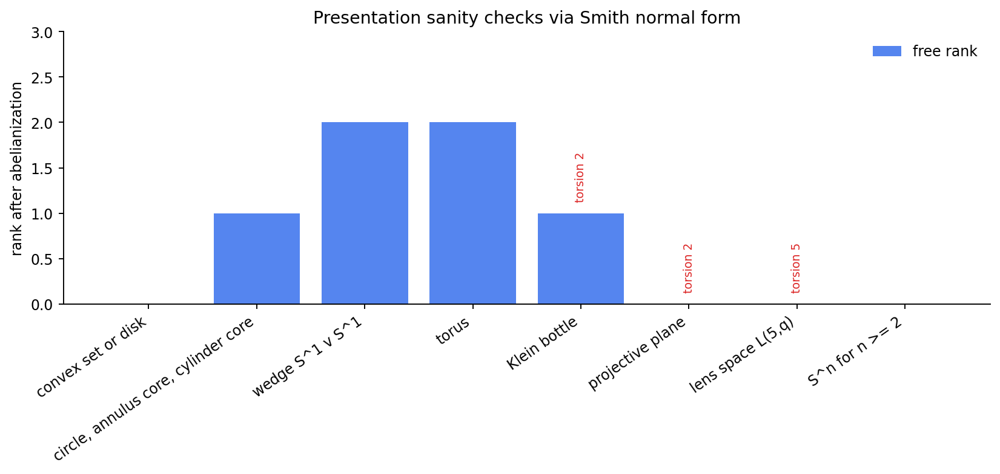
| Space | Relator | Abelian readout |
|---|---|---|
| circle or annulus core | none | \(\mathbb{Z}\) |
| wedge \(S^1\vee S^1\) | none | \(\mathbb{Z}^2\) |
| torus | \(a b A B\) | \(\mathbb{Z}^2\) |
| Klein bottle | \(a a B B\) | \(\mathbb{Z}\times\mathbb{Z}/2\) |
| lens space \(L(5,q)\) | \(a^5\) | \(\mathbb{Z}/5\) |
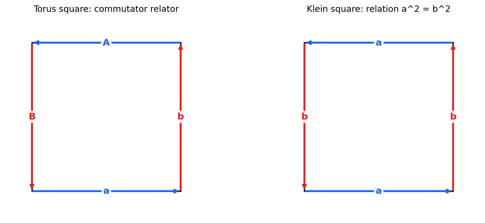
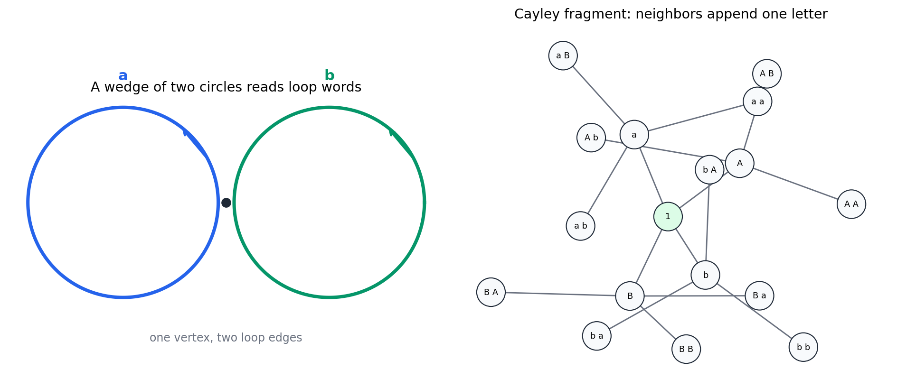
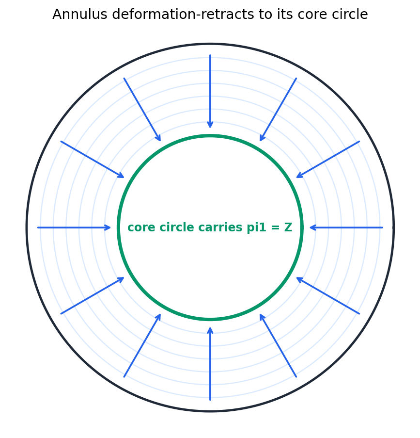
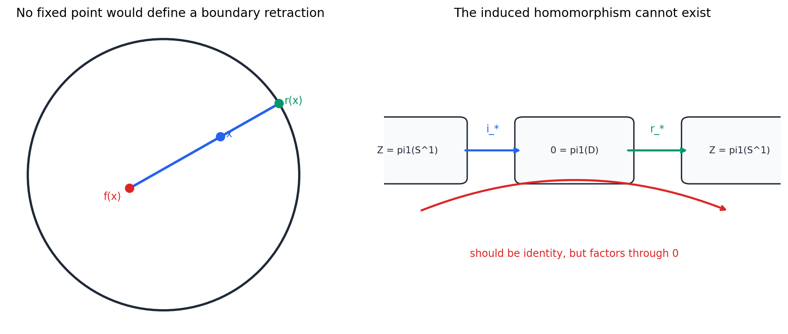
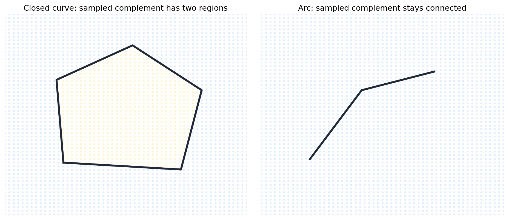
The grid is evidence for the visual claim; the proof uses the same fundamental-group obstruction style as Brouwer.
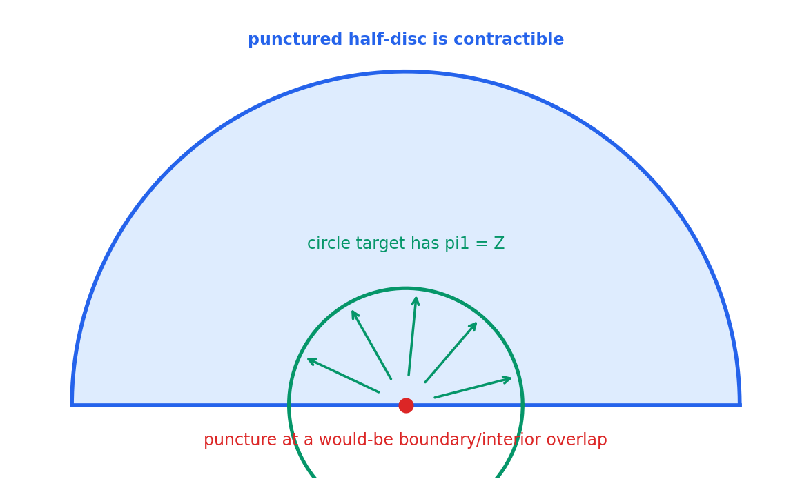
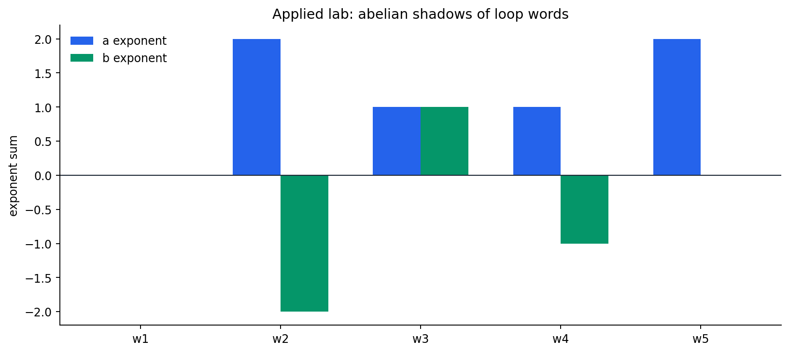
| Word | Circle degree | Torus vector | Klein marker |
|---|---|---|---|
| \(a b A B\) | 0 | (0, 0) | 0 |
| \(a a B B\) | 2 | (2, -2) | 0 |
| \(a b b A B a\) | 1 | (1, 1) | 1 |
| \(a B a B A b\) | 1 | (1, -1) | 0 |
| \(a a a A B b\) | 2 | (2, 0) | 0 |